Open Visual Studio
Choose Create a new project
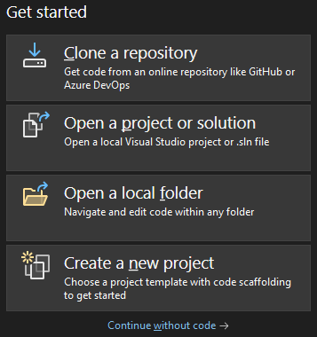
Choose Blank Solution and click
Next
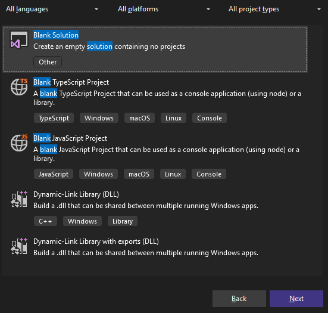
Name the solution ctutorial and click
Create
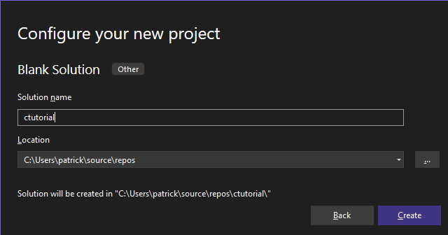
Right-click the solution node in Solution Explorer and choose
Add -> New Project
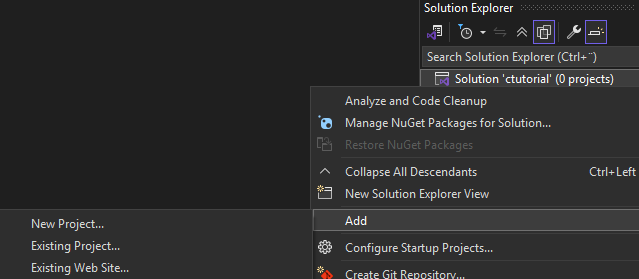
Choose project type Console App C++ and click
Next
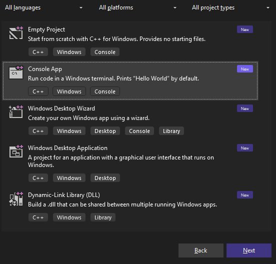
Name the project capp and click
Create
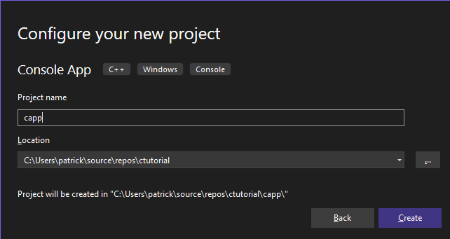
Right-click the file capp.cpp in Solution Explorer
and choose Remove
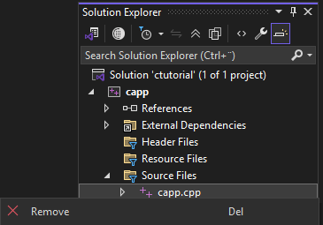
Right-click the Source Files folder and choose
Add -> New Item
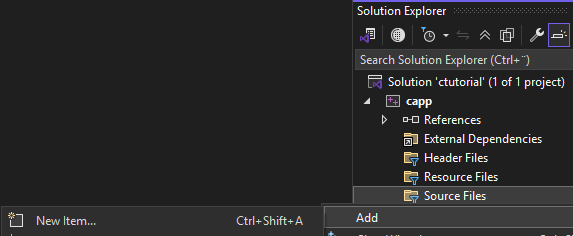
Choose file type C++ File (cpp) , name it
main.c, and click Add
.c file extension.cpp file extension, it would be
treated as a C++ file..cpp to
.c for a C file!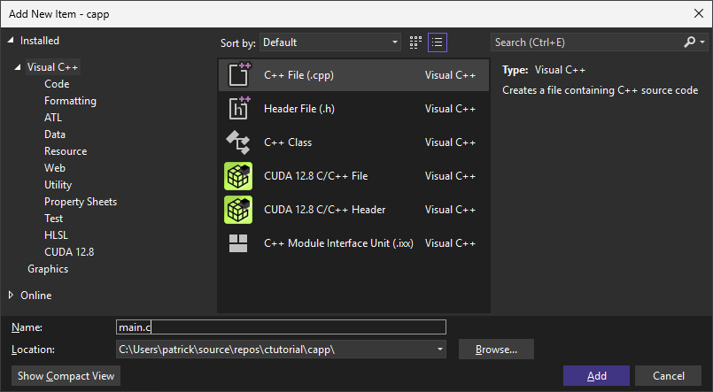
Add the code below to main.c.
#include <stdio.h>
int main(int argc, char* argv[])
{
// Print out command line arguments
printf("Number of command line arguments: %d\n", argc);
for (int i = 0; i < argc; ++i)
{
printf("Command line argument %d: %s\n", i, argv[i]);
}
puts("");
// Return 0 (program executed successfully) to operating system
return 0;
}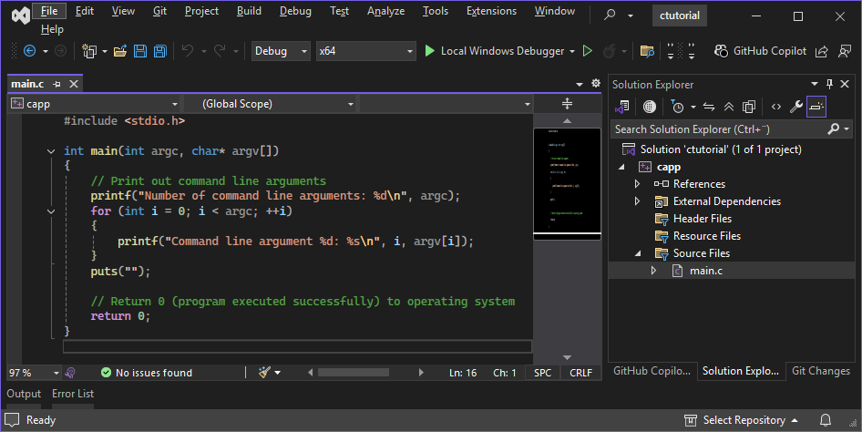
Compile (build) and run (debug) the program with
F5.
Press any key to close this window . . .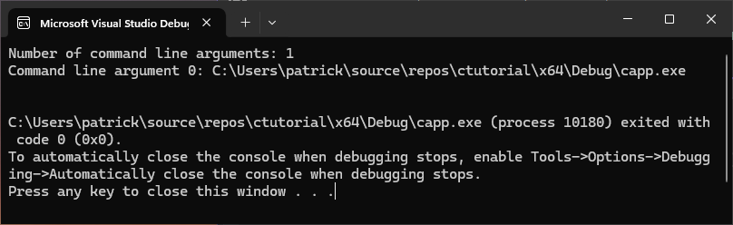
Right-click the project node in Solution Explorer and choose
Properties
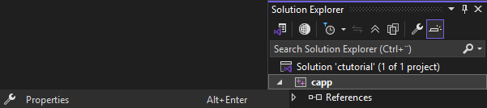
In Configuration Properties notice:
$(SolutionDir)$(Platform)\$(Configuration)\
C:\Users\patrick\source\repos\ctutorial\x64\Debug\
$(SolutionDir) is
C:\Users\patrick\source\repos\ctutorial\$(Platform) is x64$(Configuration) is DebugOpen Folder in File Explorer, it will take you to
$(SolutionDir)Application (.exe)
.exe)Default (Legacy MSVC)
One Two Three.h)#defines for the
preprocessorNot Using Precompiled Headerscl.exe compiler.lib)OpenCL.libClick Apply and then OK to cloae the
Project Properties window.
Set a breakpoint on the row with the second printf()
statement and debug again
argc is set to 4 since
we added 3 command line arguments in the Project Properties
(the full path to the executable is always the first argument, hence
1+3=4)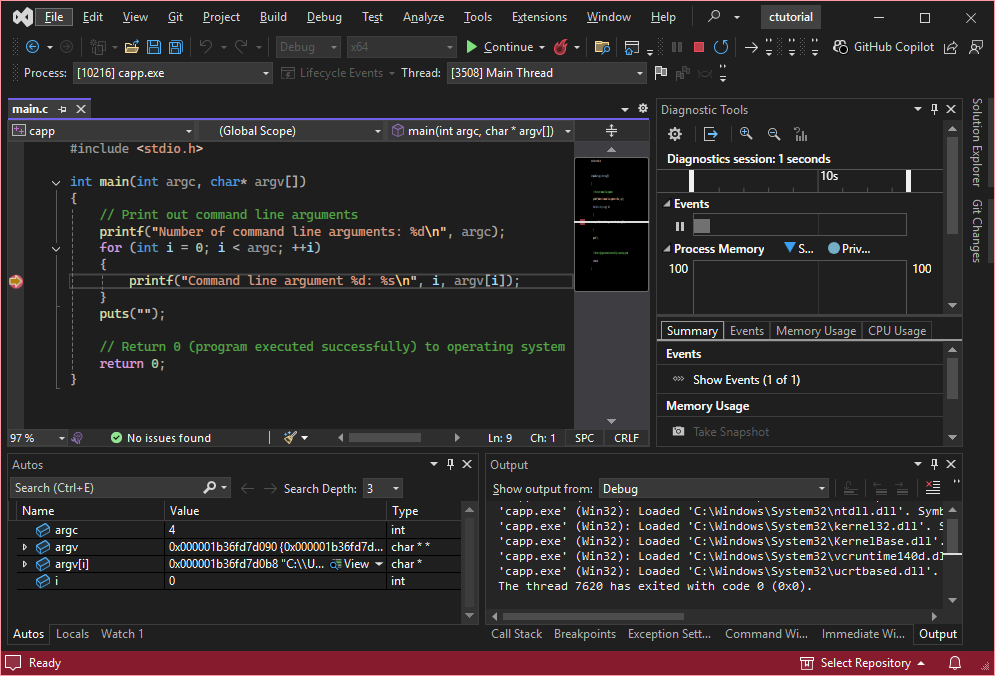
Let the program run to completion.
Press any key to close this window . . .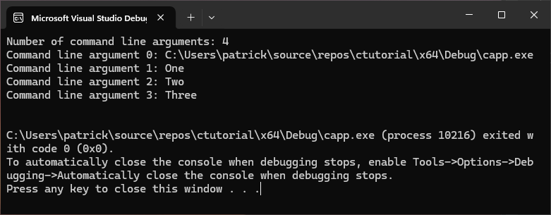
Show all Files
Show All Files icon to the left of the
spanner iconShow All Files icon again
Source Files
and Header FIles
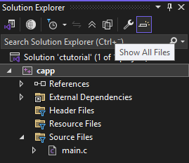Right-click the solution node in Solution Explorer and choose
Open Folder in File Explorer
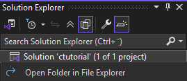
In File Explorer, notice the file/folder structure
capp Project
filecapp project’s
only source filecapp project
executablesimplemath module, starting with the header file.
Header Files and choose
Add -> New Item.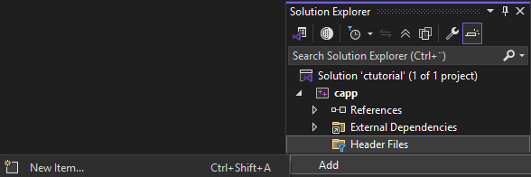
Choose file type Header File (.h) , name it
simplemath.h, and click Add
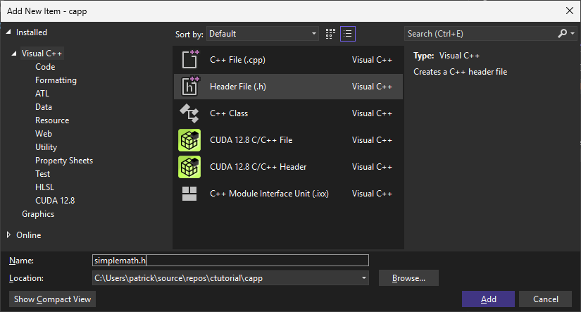
Add the code below to simplemath.h.
#pragma once
double hypotenuse(double a, double b);Note that #pragma once is equivalent to an include
guard around the code, i.e.:
#ifndef SIMPLEMATH_H
#define SIMPLEMATH_H
double hypotenuse(double a, double b);
#endif // SIMPLEMATH_H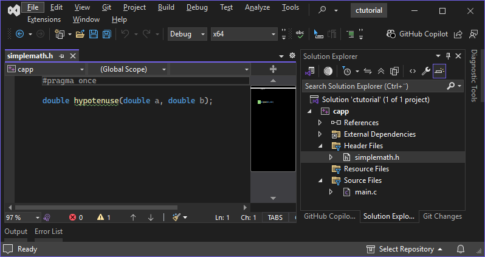
Add the simplemath module’s implementation file.
Source Files and choose
Add -> New Item.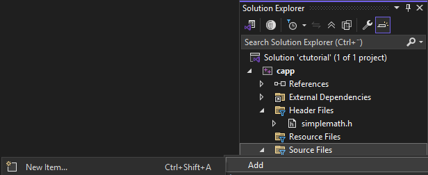
Choose file type C++ File (cpp) , name it
simplemath.c, and click Add
.cpp to
.c!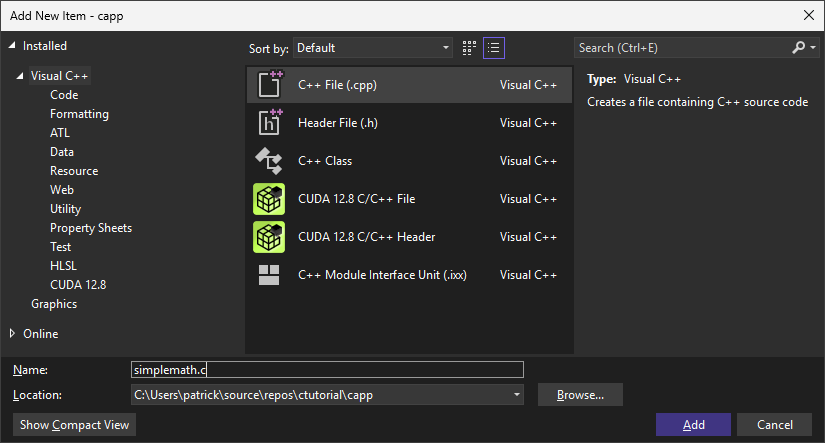
Add the code below to simplemath.c.
#include <math.h>
#include "simplemath.h"
double hypotenuse(double a, double b)
{
return sqrt(a * a + b * b);
}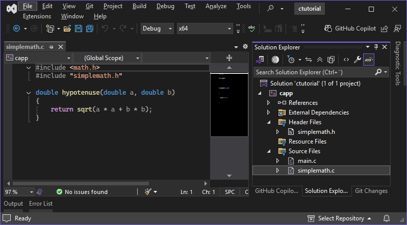
Use the simplemath module in
main.c.
main.c and replace its contents with the code
below.#include <stdio.h>
#include "simplemath.h"
int main(int argc, char* argv[])
{
// Print out command line arguments
printf("Number of command line arguments: %d\n", argc);
for (int i = 0; i < argc; ++i)
{
printf("Command line argument %d: %s\n", i, argv[i]);
}
puts("");
// Print out the hypotenuse of the sides in a right triangle
double a = 3.0;
double b = 4.0;
printf("hypotenuse(%.2f, %.2f) = %.2f.\n", a, b, hypotenuse(a, b));
// Return 0 (program executed successfully) to operating system
return 0;
}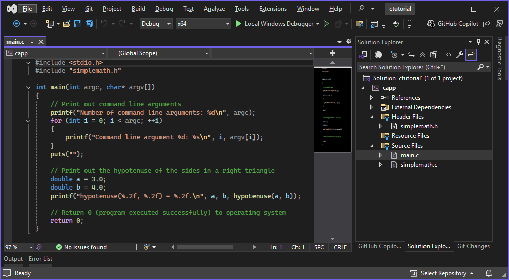
Compile (build) and run (debug) the program with
F5.
hypotenuse(3.00, 4.00) = 5.00 written
to the terminal window.Press any key to close this window . . .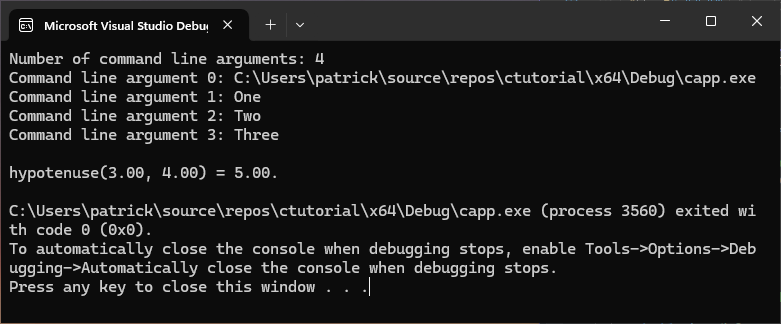
Notice the final structure of our C application:
.h) are in the Header Files
folder.
.h) has an include guard,
e.g. #pragma once..c) are in the
Source Files folder..c) contains a
main() function.
.h)..c) and a
one header file (.h).
simplemath module has
simplemath.c and simplemath.h..c)
#includes the module’s header file (.h).main.c #includes the module’s header file
(.h), if it wants to use the module.Right-click the solution node in Solution Explorer and choose
Add -> New Project
Choose project type Static Library and click
Next
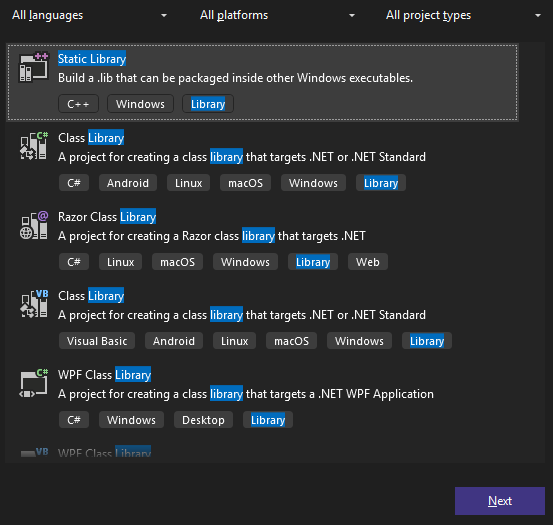
Name the project cstatic and click
Create
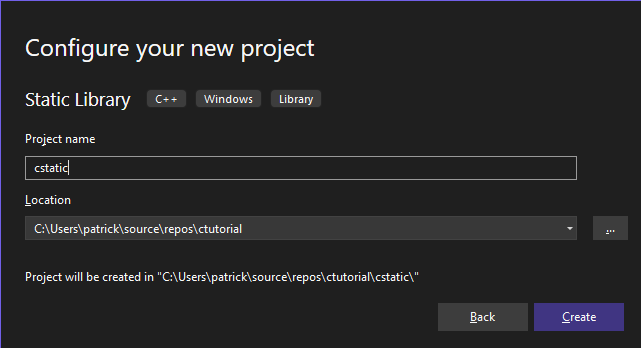
Select the files framework.h, pch.h,
cstatic.cpp, and pch.cpp, then right-click the
selection and choose Remove to delete them.
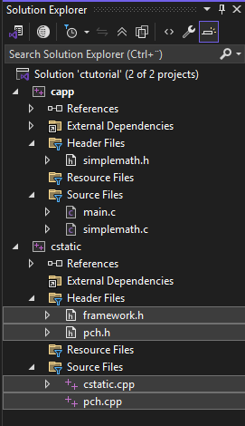
Add the file simplemath2.h with the contents
below.
simplemath.h file from the capp project via
Solution Explorer, since it will only copy a reference to the file (use
Windows File Explorer for that).#pragma once
double hypotenuse2(double a, double b);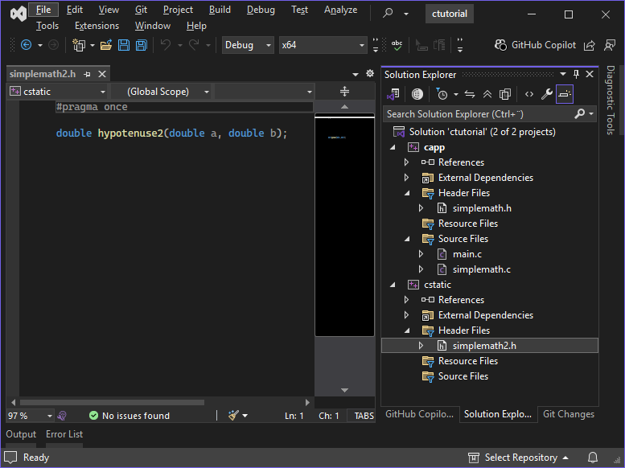
Add the file simplemath2.c with the contents
below.
simplemath.c file from the capp project via
Solution Explorer, since it will only copy a reference to the file (use
Windows File Explorer for that).#include <math.h>
#include "simplemath2.h"
double hypotenuse2(double a, double b)
{
return sqrt(a * a + b * b);
}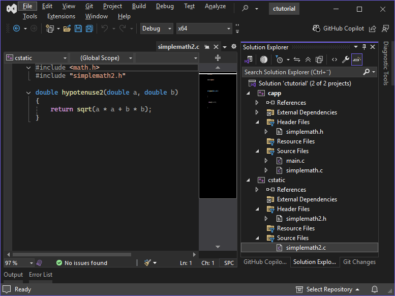
Right-click the cstatic project node in Solution
Explorer and choose Properties
Configuration Properties -> General notice:
capp projectStatic Library (.lib)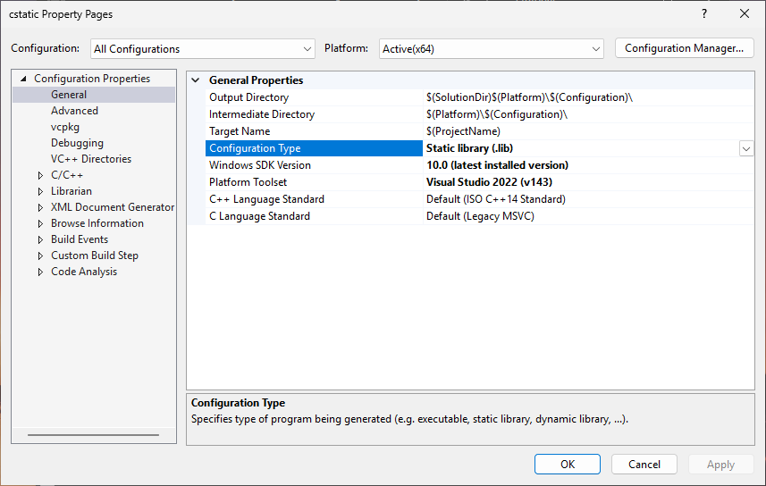
Configuration Properties -> C/C++ -> Precompiled Headers
set:
Not Using Precompiled Headers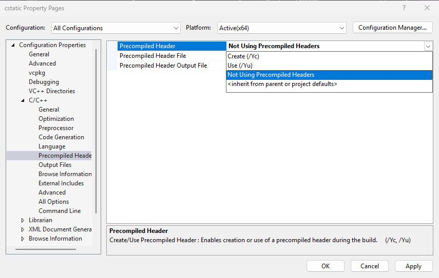
Click the Apply button and then the OK
button to close the project properties.
Build the solution with Ctrl + Shift + B.
Right-click the solution node in Solution Explorer and choose
Open Folder in File Explorer which will open the solution
folder ctutorial, then:
ctutorial\cstatic and notice
it contains the file simplemath2.h (and the file
simplemath2.c).
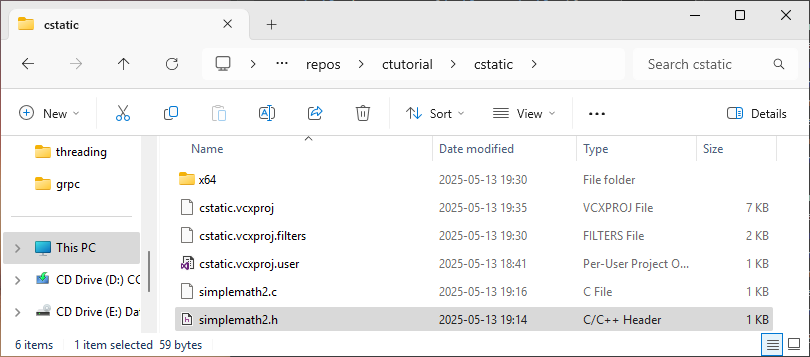ctutorial\x64\Debug and
notice it contains the compiled static library file
cstatic.lib (and the file capp.exe).
capp ProjectThe capp program needs to know where the files
simplemath2.h and cstatic.lib are, so
right-click the capp project node in Solution Explorer and
choose Properties.
Configuration Properties -> C/C++ -> General:
<Edit...>.
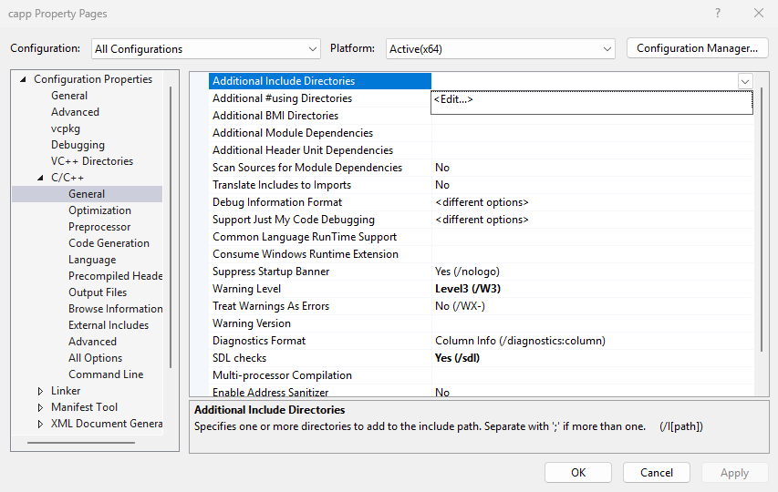simplemath2.hOK button to close the pop-up
window.
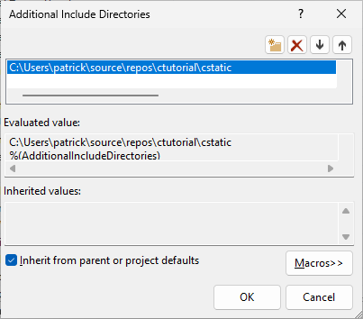Configuration Properties -> Linker -> General:
<Edit...>.
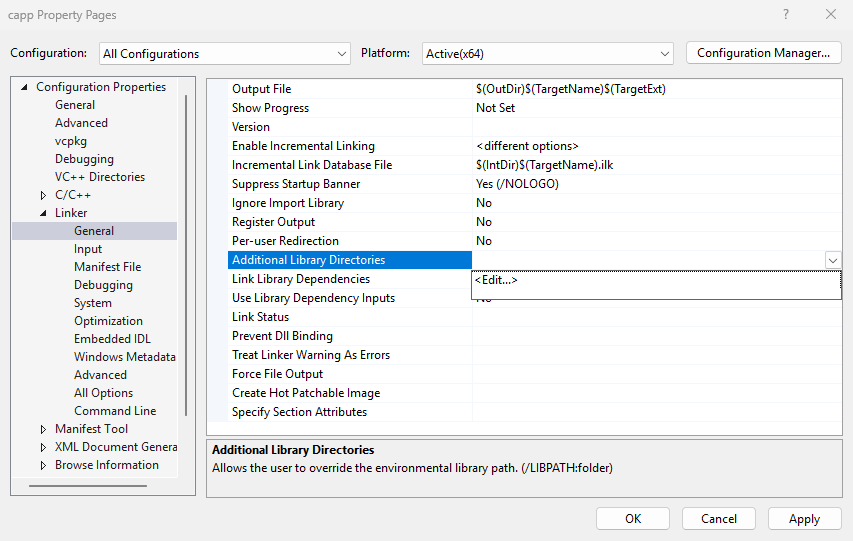cstatic.libOK button to close the pop-up
window.
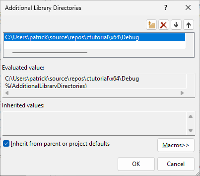Configuration Properties -> Linker -> Input:
<Edit...>.
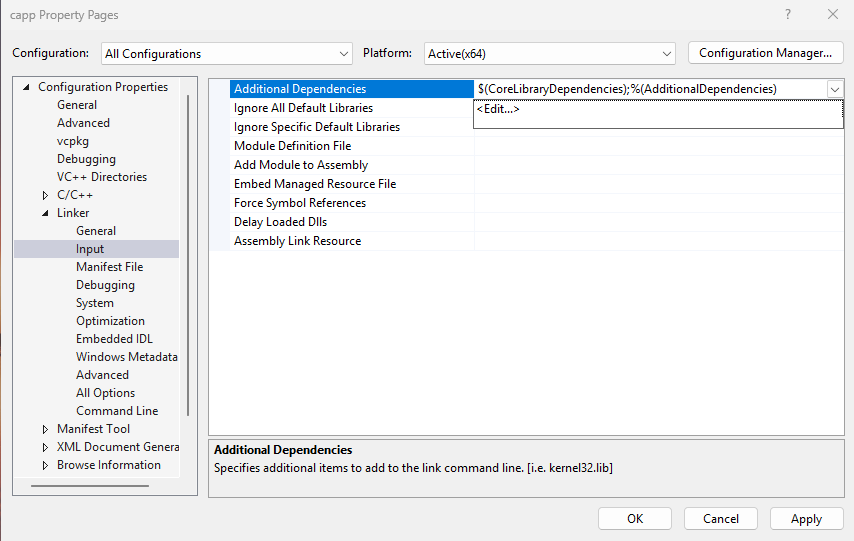cstatic.lib.OK button to close the pop-up window.
Apply button and then the
OK button to close the project properties.Open the file main.c and replace its contents with
the code below.
#include and one
printf().#include <stdio.h>
#include "simplemath.h"
#include "simplemath2.h"
int main(int argc, char* argv[])
{
// Print out command line arguments
printf("Number of command line arguments: %d\n", argc);
for (int i = 0; i < argc; ++i)
{
printf("Command line argument %d: %s\n", i, argv[i]);
}
puts("");
// Print out the hypotenuse of the sides in a right triangle
double a = 3.0;
double b = 4.0;
printf("hypotenuse(%.2f, %.2f) = %.2f.\n", a, b, hypotenuse(a, b));
printf("hypotenuse2(%.2f, %.2f) = %.2f.\n", a, b, hypotenuse2(a, b));
// Return 0 (program executed successfully) to operating system
return 0;
}Compile (build) and run (debug) the program with
F5.
hypotenuse2(3.00, 4.00) = 5.00 written
to the terminal window.Press any key to close this window . . .Right-click the solution node in Solution Explorer and choose
Add -> New Project
Choose project type Dynamic-Link Library (DLL) and
click Next
Name the project cdynamic and click
Create
Select the files framework.h, pch.h,
dllmain.cpp, and pch.cpp, then right-click the
selection and choose Remove to delete them.
Add the file simplemath3.h with the contents
below.
simplemath.h file from the capp project via
Solution Explorer, since it will only copy a reference to the file (use
Windows File Explorer for that).# pragma once
#ifdef MYDLL_EXPORTS
#define MYDLL_API __declspec(dllexport)
#else
#define MYDLL_API __declspec(dllimport)
#endif
MYDLL_API double hypotenuse3(double a, double b);Add the file simplemath3.c with the contents
below.
simplemath.c file from the capp project via
Solution Explorer, since it will only copy a reference to the file (use
Windows File Explorer for that).#include <math.h>
#include "simplemath3.h"
double hypotenuse3(double a, double b)
{
return sqrt(a * a + b * b);
}Right-click the cdynamic project node in Solution
Explorer and choose Properties
Configuration Properties -> General notice:
capp projectDynamic Library (.dll)Configuration Properties -> C/C++ -> Preprocessor:
<Edit...>.
MYDLL_EXPORTS.OK button to close the pop-up
window.
Configuration Properties -> C/C++ -> Precompiled Headers
set:
Not Using Precompiled Headers
Apply button and then the OK
button to close the project properties.Build the solution with Ctrl + Shift + B.
Right-click the solution node in Solution Explorer and choose
Open Folder in File Explorer which will open the solution
folder ctutorial, then:
ctutorial\cdynamic and notice
it contains the file simplemath3.h (and the file
simplemath3.c).
ctutorial\x64\Debug and
notice it contains the compiled dynamic library file
cdynamic.dll together with its import library
cdynamic.lib (and the file capp.exe).
capp ProjectThe capp program needs to know where the files
simplemath3.h and cdynamic.lib are
(cdynamic.dll is in the same folder as
capp.exe which is where it should be), so right-click the
capp project node in Solution Explorer and choose
Properties.
Configuration Properties -> C/C++ -> General:
<Edit...>.
simplemath3.hOK button to close the pop-up
window.
Configuration Properties -> Linker -> General:
Configuration Properties -> Linker -> Input:
<Edit...>.
cdynamic.lib.OK button to close the pop-up window.
Apply button and then the
OK button to close the project properties.Open the file main.c and replace its contents with
the code below.
#include and one
printf().#include <stdio.h>
#include "simplemath.h"
#include "simplemath2.h"
#include "simplemath3.h"
int main(int argc, char* argv[])
{
// Print out command line arguments
printf("Number of command line arguments: %d\n", argc);
for (int i = 0; i < argc; ++i)
{
printf("Command line argument %d: %s\n", i, argv[i]);
}
puts("");
// Print out the hypotenuse of the sides in a right triangle
double a = 3.0;
double b = 4.0;
printf("hypotenuse(%.2f, %.2f) = %.2f.\n", a, b, hypotenuse(a, b));
printf("hypotenuse2(%.2f, %.2f) = %.2f.\n", a, b, hypotenuse2(a, b));
printf("hypotenuse3(%.2f, %.2f) = %.2f.\n", a, b, hypotenuse3(a, b));
// Return 0 (program executed successfully) to operating system
return 0;
}Compile (build) and run (debug) the program with
F5.
hypotenuse3(3.00, 4.00) = 5.00 written
to the terminal window.Press any key to close this window . . .From the main menu in Visual Studio, choose
File -> New Project
Choose project type Console App C++ and click
Next
Name the project cvec and click
Create
cvec.cpp in Solution Explorer and
choose RemoveSource Files folder and choose
Add -> New ItemChoose file type C++ File (cpp) , name it
main.c, and click Add
.c file extension.cpp file extension, it would be
treated as a C++ file..cpp to
.c for a C file!Add the code below to main.c.
#include <stdio.h>
#include <stdlib.h>
#define N 1024
void vec_add(const float* A, const float* B, float* C)
{
for (int id = 0; id < N; ++id)
{
C[id] = A[id] + B[id];
}
}
int main(void)
{
float *h_A, *h_B, *h_C;
size_t size = N * sizeof(float);
// Allocate host memory
h_A = (float*)malloc(size);
h_B = (float*)malloc(size);
h_C = (float*)malloc(size);
// Initialize host arrays
for (int i = 0; i < N; ++i) {
h_A[i] = (float)i;
h_B[i] = (float)i * 2;
h_C[i] = (float)0;
}
// Launch calculation
vec_add(h_A, h_B, h_C);
// Display results
for (int i = 0; i < 10; ++i)
printf("%f + %f = %f\n", h_A[i], h_B[i], h_C[i]);
// Cleanup
free(h_A); free(h_B); free(h_C);
return 0;
}Compile (build) and run (debug) the program with
F5.
Press any key to close this window . . .From the main menu in Visual Studio, choose
File -> New Project
Choose project type Console App C++ and click
Next
Name the project openclvec and click
Create
openclvec.cpp in Solution Explorer
and choose RemoveSource Files folder and choose
Add -> New ItemChoose file type C++ File (cpp) , name it
main.c, and click Add
.c file extension.cpp file extension, it would be
treated as a C++ file..cpp to
.c for a C file!Add the code below to main.c.
#include <CL/cl.h>
#include <stdio.h>
#include <stdlib.h>
#define N 1024
#define CL_TARGET_OPENCL_VERSION 300
#define KERNEL_FILE "kernel.cl"
char* read_kernel_source(const char* filename)
{
FILE* fp = fopen(filename, "r");
if (!fp) {
fprintf(stderr, "Failed to open kernel file: %s\n", filename);
exit(1);
}
fseek(fp, 0, SEEK_END);
long size = ftell(fp);
rewind(fp);
char* src = (char*)malloc(size + 1);
fread(src, 1, size, fp);
src[size] = '\0';
fclose(fp);
return src;
}
int main()
{
float A[N], B[N], C[N];
for (int i = 0; i < N; i++) {
A[i] = (float)i;
B[i] = (float)i * 2;
}
// OpenCL setup
cl_platform_id platform;
cl_device_id device;
cl_context context;
cl_command_queue queue;
cl_program program;
cl_kernel kernel;
cl_mem bufA, bufB, bufC;
cl_int err;
err = clGetPlatformIDs(1, &platform, NULL);
err |= clGetDeviceIDs(platform, CL_DEVICE_TYPE_DEFAULT, 1, &device, NULL);
context = clCreateContext(NULL, 1, &device, NULL, NULL, &err);
queue = clCreateCommandQueueWithProperties(context, device, 0, &err);
// Read kernel source
char* source = read_kernel_source(KERNEL_FILE);
// Create program and build
program = clCreateProgramWithSource(context, 1, (const char**)&source, NULL, &err);
err = clBuildProgram(program, 1, &device, NULL, NULL, NULL);
if (err != CL_SUCCESS) {
// Show build log on error
char log[2048];
clGetProgramBuildInfo(program, device, CL_PROGRAM_BUILD_LOG, sizeof(log), log, NULL);
printf("Build error:\n%s\n", log);
exit(1);
}
kernel = clCreateKernel(program, "vec_add", &err);
// Buffers
bufA = clCreateBuffer(context, CL_MEM_READ_ONLY, sizeof(float) * N, NULL, NULL);
bufB = clCreateBuffer(context, CL_MEM_READ_ONLY, sizeof(float) * N, NULL, NULL);
bufC = clCreateBuffer(context, CL_MEM_WRITE_ONLY, sizeof(float) * N, NULL, NULL);
clEnqueueWriteBuffer(queue, bufA, CL_TRUE, 0, sizeof(float) * N, A, 0, NULL, NULL);
clEnqueueWriteBuffer(queue, bufB, CL_TRUE, 0, sizeof(float) * N, B, 0, NULL, NULL);
clSetKernelArg(kernel, 0, sizeof(cl_mem), &bufA);
clSetKernelArg(kernel, 1, sizeof(cl_mem), &bufB);
clSetKernelArg(kernel, 2, sizeof(cl_mem), &bufC);
size_t global_size = N;
clEnqueueNDRangeKernel(queue, kernel, 1, NULL, &global_size, NULL, 0, NULL, NULL);
clEnqueueReadBuffer(queue, bufC, CL_TRUE, 0, sizeof(float) * N, C, 0, NULL, NULL);
for (int i = 0; i < 10; i++)
printf("%f + %f = %f\n", A[i], B[i], C[i]);
free(source);
clReleaseMemObject(bufA);
clReleaseMemObject(bufB);
clReleaseMemObject(bufC);
clReleaseProgram(program);
clReleaseKernel(kernel);
clReleaseCommandQueue(queue);
clReleaseContext(context);
return 0;
}Right-click the Source Files folder and choose
Add -> New Item
Choose file type C++ File (cpp) , name it
kernel.cl, and click Add
.cl.Add the code below to kernel.cl.
__kernel void vec_add(__global const float* A, __global const float* B, __global float* C)
{
int id = get_global_id(0);
C[id] = A[id] + B[id];
}Compile (build) and run (debug) the program with
F5.
Press any key to close this window . . .
In the previous step, if you get a compilation error
is not valid UTF-8:
kernel.cl in Visual Studio Code
(VSCode).CRLF.LF.Ctrl + S.If you get preprocessor or linker errors:
Properties.Configuration Properties -> C/C++ -> General:
%LOCALAPPDATA%\Programs\vcpkg\installed\x64-windows\includeC:\Program Files\NVIDIA GPU Computing Toolkit\CUDA\v12.8\includeConfiguration Properties -> Linker -> General:
%LOCALAPPDATA%\Programs\vcpkg\installed\x64-windows\libC:\Program Files\NVIDIA GPU Computing Toolkit\CUDA\v12.8\lib\x64Configuration Properties -> Linker -> Input:
OpenCL.libFrom the main menu in Visual Studio, choose
File -> New Project
Choose project type CUDA xx.x Runtime and click
Next
xx.x with your installed version of the CUDA
Toolkit.Name the project cudavec and click
Create
Replace the contents in the file kernel.cu with the
code below:
#include "cuda_runtime.h"
#include "device_launch_parameters.h"
#include <stdio.h>
#include <stdlib.h>
#define N 1024
__global__ void vec_add(const float* A, const float* B, float* C)
{
int id = threadIdx.x + blockDim.x * blockIdx.x;
if (id < N) {
C[id] = A[id] + B[id];
}
}
int main(void)
{
float* h_A, * h_B, * h_C;
float* d_A, * d_B, * d_C;
size_t size = N * sizeof(float);
// Allocate host memory
h_A = (float*)malloc(size);
h_B = (float*)malloc(size);
h_C = (float*)malloc(size);
// Initialize host arrays
for (int i = 0; i < N; ++i) {
h_A[i] = (float)i;
h_B[i] = (float)i * 2;
}
// Allocate device memory
cudaMalloc((void**)&d_A, size);
cudaMalloc((void**)&d_B, size);
cudaMalloc((void**)&d_C, size);
// Copy data to device
cudaMemcpy(d_A, h_A, size, cudaMemcpyHostToDevice);
cudaMemcpy(d_B, h_B, size, cudaMemcpyHostToDevice);
// Launch kernel
int threadsPerBlock = 256;
int blocksPerGrid = (N + threadsPerBlock - 1) / threadsPerBlock;
vec_add<<<blocksPerGrid, threadsPerBlock>>>(d_A, d_B, d_C);
// Copy result back to host
cudaMemcpy(h_C, d_C, size, cudaMemcpyDeviceToHost);
// Display results
for (int i = 0; i < 10; ++i)
printf("%f + %f = %f\n", h_A[i], h_B[i], h_C[i]);
// Cleanup
free(h_A); free(h_B); free(h_C);
cudaFree(d_A); cudaFree(d_B); cudaFree(d_C);
return 0;
}Compile (build) and run (debug) the program with
F5.
Press any key to close this window . . .
In the previous step, if you get preprocessor or linker errors:
Properties.Configuration Properties -> C/C++ -> General:
C:\Program Files\NVIDIA GPU Computing Toolkit\CUDA\v12.8\includeConfiguration Properties -> Linker -> General:
C:\Program Files\NVIDIA GPU Computing Toolkit\CUDA\v12.8\lib\x64Configuration Properties -> Linker -> Input:
cudart.lib or cudart_static.lib